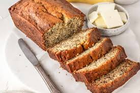

Banana Bread

Description
Banana bread is a comforting and moist quick bread, filled with natural sweetness and the wholesome
taste of ripe bananas. This recipe is a perfect way to use overripe bananas, and it can be enhanced
with optional ingredients like nuts or chocolate chips for added texture and flavour. Serve it warm
with a pat of butter or enjoy it plain for a delicious snack or breakfast.
Ingredients
- 3 ripe bananas, mashed
- 75g melted butter
- 150g granulated sugar
- 1 large egg, beaten
- 1 tsp vanilla extract
- 1 tsp baking soda
- Pinch of salt
- 190g all-purpose flour
- Optional: 50g chopped walnuts or chocolate chips
Steps
- Preheat the Oven: Preheat your oven to 175°C (350°F) and grease a 9x5-inch loaf pan.
- Combine Wet Ingredients: In a mixing bowl, combine the mashed bananas, melted butter,
and sugar, stirring until smooth.
- Add Egg and Vanilla: Mix in the beaten egg and vanilla extract until well blended.
- Incorporate Dry Ingredients: Add the baking soda and salt, then fold in the flour,
mixing gently until just combined. Avoid overmixing.
- Optional Add-Ins: If desired, fold in chopped walnuts or chocolate chips.
- Pour and Bake: Pour the batter into the greased loaf pan. Bake for 60-65 minutes
or until a toothpick inserted into the centre comes out clean.
- Cool and Serve: Allow the banana bread to cool in the pan for 10 minutes before
transferring it to a wire rack to cool completely. Slice and enjoy.